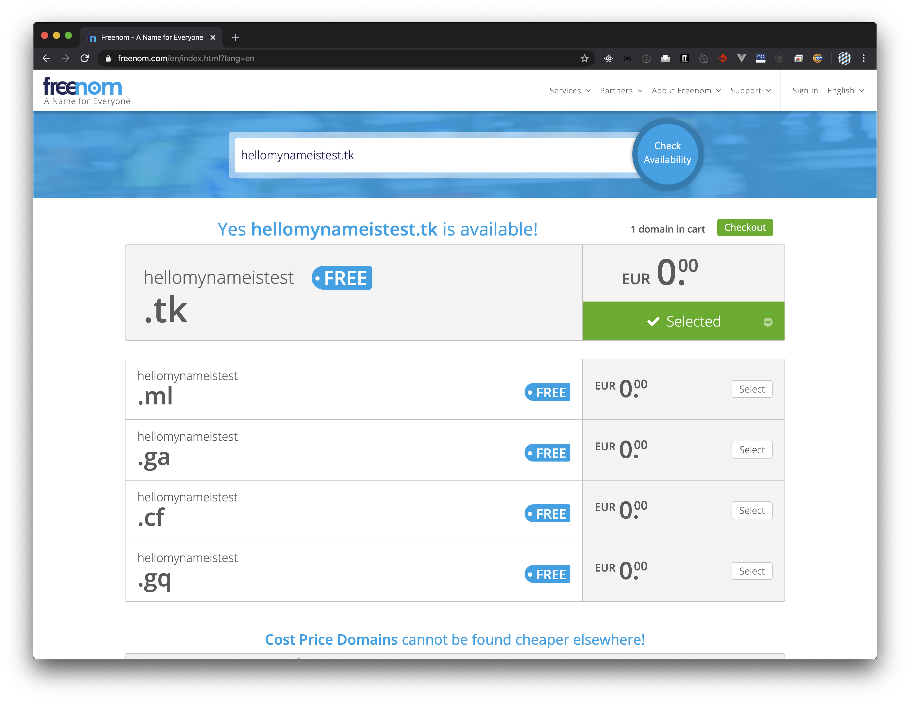
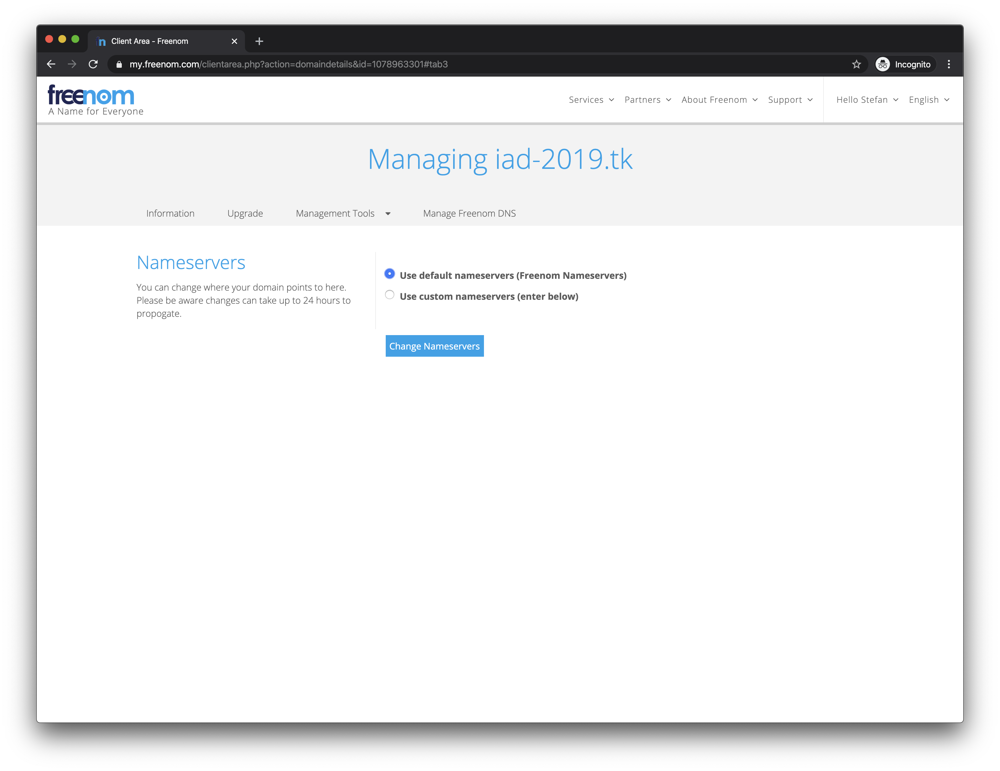
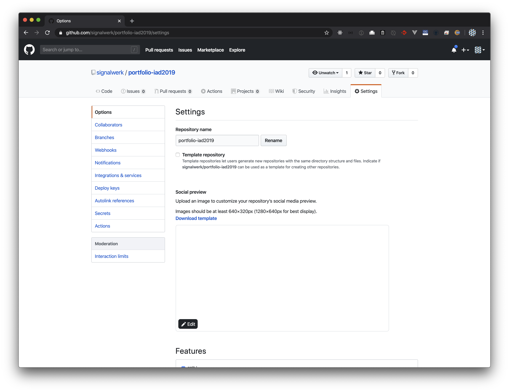

Ablauf
Freenom
→ freenom.com öffnen
→ Wunschdomain mit .tk-Endung eingeben

→ Checkout (oben rechts) wählen 
→ «Forward this Domain» (beliebige URL eingeben)

→ 12 Monate einstellen
→ Verify via Mail

→ Link in Mail klicken (kann einige Minuten dauern)
 → Anmeldung ausfüllen & Login
→ Anmeldung ausfüllen & Login

→ Unter «My Domains»
 → «Manage Domain»
→ «Manage Domain»

→ Management Tools
→ Use default nameservers (Freenom Nameservers)

→ Manage Freenom DNS
→ IP in DNS eintragen
- 185.199.108.153
- 185.199.109.153
- 185.199.110.153
- 185.199.111.153

Github
→ Auf Github im Repository
→ Settings

→ Scroll bis «Custom domain»
→ Domain Eintragen